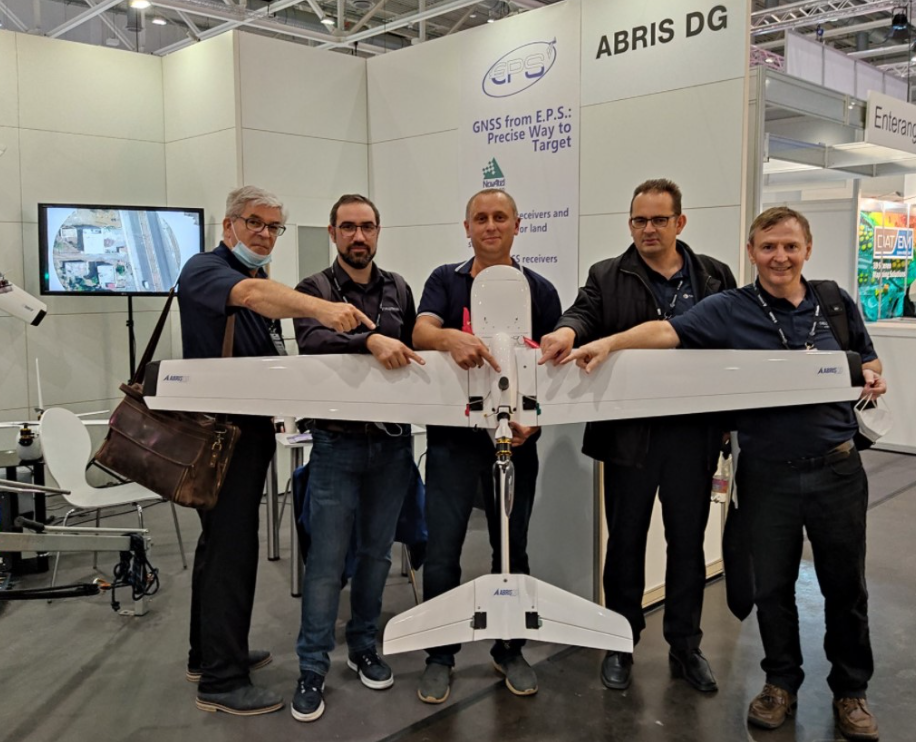

«Для визначення кутового положення літака ми встановили на його поздовжній осі дві антени Helix HC872, з’єднані з приладом EPSKit-7D на базі двоантенного приймача NovAtel OEM7720. Технічні характеристики антен мають в цьому випадку вирішальне значення для успішного функціонування системи. В результаті експерименту, в ході якого літак виконував політ по зіркоподібній траєкторії з 8 різними напрямками польоту при вітрі помірної сили, були отримані обнадійливі результати: навіть на відносно невеликій базі (антени були розташовані на відстані 40 см одна від одної) отримані рішення дозволили стабільно визначати кут Heading в польоті з високою точністю. Після завершення серії експериментів і розробки необхідних пристроїв ми розраховуємо застосовувати цю технологію як стандартне конструктивне рішення для наших літаків.» — Вадим Колесніченко, співзасновник та директор компанії ABRIS DG.
«У процесі створення аерофотознімальних комплексів на базі БПЛА FLIRT Cetus фахівцями нашої компанії були протестовані велика кількість GNSS антен різних виробників. На сьогоднішній день я можу сміливо стверджувати, що Helical антени компанії Tallysman Wireless — HC871 (двочастотний варіант) і HC771 (одночастотний варіант) показують найкращий результат за якістю і надійності прийому GNSS сигналів. Прекрасне посилення, мінімальна кількість шумів і зривів в стеженні за фазою несучої сигналів навіть в розворотах БПЛА — це саме те, що нам необхідно при реалізації наших технічних рішень.» — Євген Ковальчук, головний інженер компанії ABRIS DG.
«Ми дуже раді багаторічній плідній співпраці з провідним виробником БПЛА в Україні — компанією ABRIS DG. Завдяки нашим спільним зусиллям, сучасні і передові технології виробництва антенних систем компанії Tallysman Wireless знаходять все більш широке практичне застосування не тільки в Україні, а й далеко за її межами.» — Сергій Флерко, директор компанії EPS LLC — представника компанії Tallysman Wireless в Україні.
